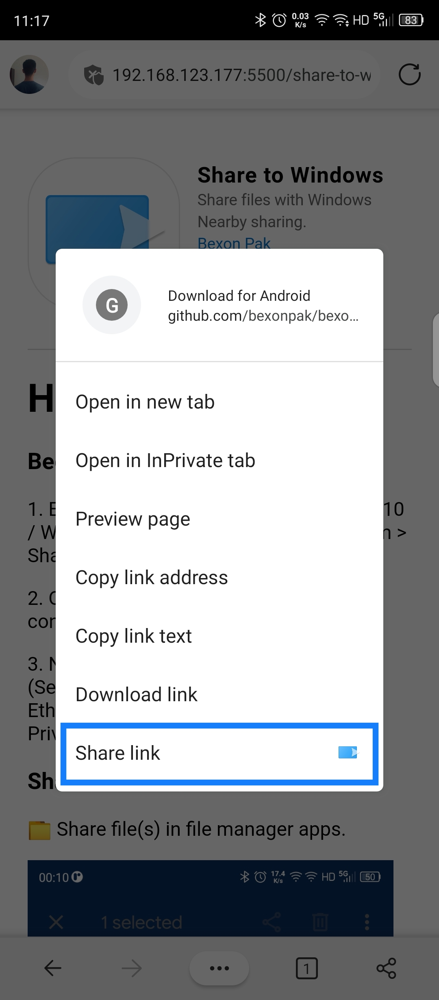

How to use
Begin -
1. Enabled the NearbyShare on Windows 10 / Windows 11. (Settings > Home > System > Shared experiences > Nearby sharing)
2. On same page, switch share or receive content from Everyone nearby.
3. Network status change to Private. (Settings > Network & internet > Wi-Fi / Ethernet > Wi-Fi / Ethernet properties > Private
Share -
üìÅ Share file(s) in file manager apps.
üåè Share website or url in browser apps. (e.g. Microsoft Edge)
Final -
Accept on Windows notification